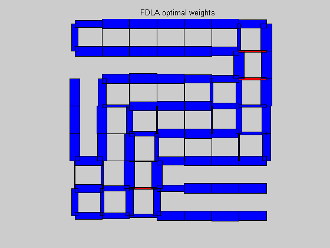
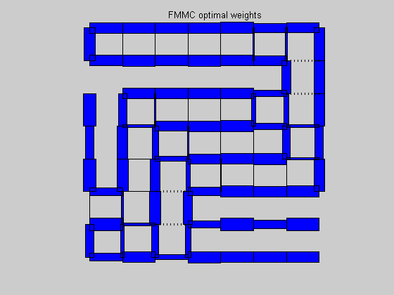
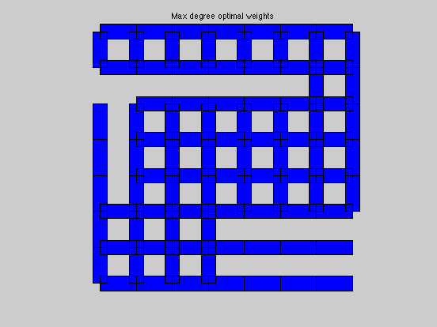
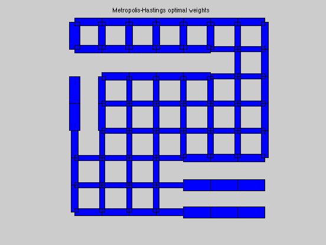

FDLA and FMMC solutions for a 64-node, 95-edge cut-grid graph
[A,xy] = cut_grid_data;
[n,m] = size(A);
[ w_fdla, rho_fdla ] = fdla(A);
[ w_fmmc, rho_fmmc ] = fmmc(A);
[ w_md, rho_md ] = max_deg(A);
[ w_bc, rho_bc ] = best_const(A);
[ w_mh, rho_mh ] = mh(A);
tau_fdla = 1/log(1/rho_fdla);
tau_fmmc = 1/log(1/rho_fmmc);
tau_md = 1/log(1/rho_md);
tau_bc = 1/log(1/rho_bc);
tau_mh = 1/log(1/rho_mh);
fprintf(1,'\nResults:\n');
fprintf(1,'FDLA weights:\t\t rho = %5.4f \t tau = %5.4f\n',rho_fdla,tau_fdla);
fprintf(1,'FMMC weights:\t\t rho = %5.4f \t tau = %5.4f\n',rho_fmmc,tau_fmmc);
fprintf(1,'M-H weights:\t\t rho = %5.4f \t tau = %5.4f\n',rho_mh,tau_mh);
fprintf(1,'MAX_DEG weights:\t rho = %5.4f \t tau = %5.4f\n',rho_md,tau_md);
fprintf(1,'BEST_CONST weights:\t rho = %5.4f \t tau = %5.4f\n',rho_bc,tau_bc);
figure(1), clf
plotgraph(A,xy,w_fdla);
text(0.425,1.05,'FDLA optimal weights')
figure(2), clf
plotgraph(A,xy,w_fmmc);
text(0.425,1.05,'FMMC optimal weights')
figure(3), clf
plotgraph(A,xy,w_md);
text(0.375,1.05,'Max degree optimal weights')
figure(4), clf
plotgraph(A,xy,w_bc);
text(0.375,1.05,'Best constant optimal weights')
figure(5), clf
plotgraph(A,xy,w_mh);
text(0.3,1.05,'Metropolis-Hastings optimal weights')
Calling SDPT3: 4189 variables, 125 equality constraints
For improved efficiency, SDPT3 is solving the dual problem.
------------------------------------------------------------
num. of constraints = 125
dim. of sdp var = 128, num. of sdp blk = 2
dim. of free var = 29 *** convert ublk to lblk
*******************************************************************
SDPT3: Infeasible path-following algorithms
*******************************************************************
version predcorr gam expon scale_data
HKM 1 0.000 1 0
it pstep dstep pinfeas dinfeas gap mean(obj) cputime
-------------------------------------------------------------------
0|0.000|0.000|2.0e+03|4.3e+01|2.6e+05| 4.860823e-10| 0:0:00| chol 1 1
1|0.901|0.971|2.0e+02|1.4e+00|5.9e+03| 3.565804e+00| 0:0:00| chol 1 1
2|0.982|0.994|3.7e+00|3.8e-02|9.6e+01|-5.335412e+00| 0:0:01| chol 1 1
3|1.000|1.000|1.4e-04|3.0e-03|8.4e+00|-4.206850e+00| 0:0:01| chol 1 1
4|1.000|0.876|2.5e-04|6.6e-04|1.1e+00|-6.155373e-01| 0:0:01| chol 1 1
5|0.655|0.276|8.5e-05|5.3e-04|5.4e-01|-9.579193e-01| 0:0:01| chol 1 1
6|1.000|0.423|1.4e-06|3.2e-04|2.6e-01|-9.940084e-01| 0:0:02| chol 1 1
7|1.000|0.568|3.3e-07|1.4e-04|9.4e-02|-9.877349e-01| 0:0:02| chol 1 1
8|0.962|0.384|1.0e-07|8.7e-05|4.9e-02|-9.897595e-01| 0:0:02| chol 1 1
9|0.884|0.494|6.8e-08|4.4e-05|2.0e-02|-9.902031e-01| 0:0:02| chol 1 1
10|0.968|0.218|1.8e-08|3.4e-05|1.4e-02|-9.906830e-01| 0:0:03| chol 2 1
11|1.000|0.554|8.7e-09|2.8e-05|5.6e-03|-9.897293e-01| 0:0:03| chol 1 1
12|1.000|0.952|4.0e-10|9.6e-06|1.2e-03|-9.879534e-01| 0:0:03| chol 1 1
13|0.937|0.920|9.8e-11|2.0e-06|1.1e-04|-9.882545e-01| 0:0:03| chol 2 2
14|1.000|0.959|1.3e-11|1.9e-07|2.3e-05|-9.882820e-01| 0:0:04| chol 2 2
15|1.000|0.983|7.3e-12|3.9e-08|1.2e-06|-9.882914e-01| 0:0:04| chol 2 1
16|1.000|0.986|1.3e-11|2.1e-09|3.7e-08|-9.882919e-01| 0:0:04|
stop: max(relative gap, infeasibilities) < 1.49e-08
-------------------------------------------------------------------
number of iterations = 16
primal objective value = -9.88291850e-01
dual objective value = -9.88291885e-01
gap := trace(XZ) = 3.69e-08
relative gap = 1.24e-08
actual relative gap = 1.18e-08
rel. primal infeas = 1.32e-11
rel. dual infeas = 2.07e-09
norm(X), norm(y), norm(Z) = 9.9e-01, 7.4e+00, 1.3e+01
norm(A), norm(b), norm(C) = 3.6e+01, 2.0e+00, 1.2e+01
Total CPU time (secs) = 4.2
CPU time per iteration = 0.3
termination code = 0
DIMACS: 1.3e-11 0.0e+00 1.3e-08 0.0e+00 1.2e-08 1.2e-08
-------------------------------------------------------------------
------------------------------------------------------------
Status: Solved
Optimal value (cvx_optval): +0.988292
Calling SDPT3: 4369 variables, 146 equality constraints
For improved efficiency, SDPT3 is solving the dual problem.
------------------------------------------------------------
num. of constraints = 146
dim. of sdp var = 128, num. of sdp blk = 2
dim. of linear var = 159
dim. of free var = 50 *** convert ublk to lblk
*******************************************************************
SDPT3: Infeasible path-following algorithms
*******************************************************************
version predcorr gam expon scale_data
HKM 1 0.000 1 0
it pstep dstep pinfeas dinfeas gap mean(obj) cputime
-------------------------------------------------------------------
0|0.000|0.000|2.1e+03|8.6e+01|2.3e+06| 1.765333e+02| 0:0:00| chol 1 1
1|0.782|0.928|4.5e+02|6.4e+00|5.1e+04| 4.224868e+02| 0:0:00| chol 1 1
2|0.887|0.971|5.0e+01|2.6e-01|2.5e+03| 3.763174e+02| 0:0:01| chol 1 1
3|0.945|0.867|2.8e+00|4.1e-02|2.1e+02| 5.613978e+01| 0:0:01| chol 1 1
4|1.000|0.766|4.3e-06|1.0e-02|1.7e+01|-9.715662e-01| 0:0:01| chol 1 1
5|0.962|0.886|9.1e-06|1.2e-03|1.4e+00|-5.006900e-01| 0:0:02| chol 1 1
6|0.572|0.266|4.0e-06|9.0e-04|9.6e-01|-6.972880e-01| 0:0:02| chol 1 1
7|1.000|0.364|9.0e-08|5.7e-04|3.5e-01|-9.331739e-01| 0:0:02| chol 1 1
8|1.000|0.499|4.8e-08|2.9e-04|1.4e-01|-9.692218e-01| 0:0:03| chol 1 1
9|0.945|0.487|1.4e-08|1.5e-04|6.0e-02|-9.814965e-01| 0:0:03| chol 1 1
10|0.830|0.399|6.1e-09|8.8e-05|3.0e-02|-9.873806e-01| 0:0:03| chol 1 1
11|0.870|0.370|2.6e-09|5.3e-05|1.5e-02|-9.898446e-01| 0:0:04| chol 1 1
12|0.932|0.920|5.3e-10|1.5e-05|4.0e-03|-9.878477e-01| 0:0:04| chol 2 2
13|0.954|0.936|1.1e-10|4.0e-06|1.6e-03|-9.883587e-01| 0:0:04| chol 2 2
14|0.930|0.906|1.4e-10|1.6e-06|4.0e-04|-9.887138e-01| 0:0:05| chol 2 2
15|0.955|0.935|1.4e-10|3.9e-07|1.9e-04|-9.887746e-01| 0:0:05| chol 2 2
16|1.000|0.949|1.2e-10|1.9e-07|6.4e-05|-9.888102e-01| 0:0:05| chol 2 2
17|1.000|0.957|5.7e-10|6.4e-08|1.8e-05|-9.888217e-01| 0:0:06| chol 2 2
18|1.000|0.960|1.7e-10|1.8e-08|4.7e-06|-9.888250e-01| 0:0:06| chol 3 3
19|1.000|0.959|1.2e-10|4.7e-09|1.3e-06|-9.888258e-01| 0:0:06| chol 4 4
20|1.000|0.956|6.5e-10|1.3e-09|3.7e-07|-9.888261e-01| 0:0:06| chol 5 5
21|1.000|0.957|1.1e-09|3.9e-10|1.1e-07|-9.888261e-01| 0:0:07| chol 6 8
22|1.000|0.956|4.5e-10|1.4e-10|3.1e-08|-9.888261e-01| 0:0:07|
stop: max(relative gap, infeasibilities) < 1.49e-08
-------------------------------------------------------------------
number of iterations = 22
primal objective value = -9.88826133e-01
dual objective value = -9.88826162e-01
gap := trace(XZ) = 3.09e-08
relative gap = 1.04e-08
actual relative gap = 9.62e-09
rel. primal infeas = 4.47e-10
rel. dual infeas = 1.42e-10
norm(X), norm(y), norm(Z) = 1.0e+00, 4.7e+00, 1.4e+01
norm(A), norm(b), norm(C) = 3.7e+01, 2.0e+00, 1.3e+01
Total CPU time (secs) = 7.0
CPU time per iteration = 0.3
termination code = 0
DIMACS: 4.5e-10 0.0e+00 9.2e-10 0.0e+00 9.6e-09 1.0e-08
-------------------------------------------------------------------
------------------------------------------------------------
Status: Solved
Optimal value (cvx_optval): +0.988826
Results:
FDLA weights: rho = 0.9883 tau = 84.9099
FMMC weights: rho = 0.9888 tau = 88.9938
M-H weights: rho = 0.9917 tau = 120.2442
MAX_DEG weights: rho = 0.9927 tau = 136.7523
BEST_CONST weights: rho = 0.9921 tau = 126.3450
   